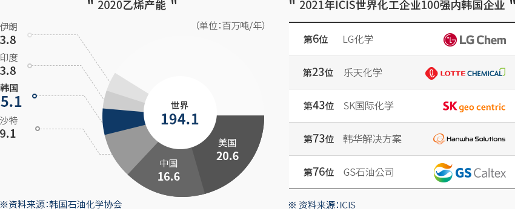
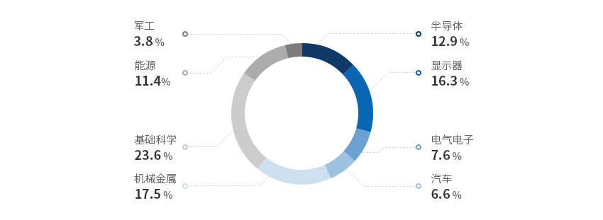
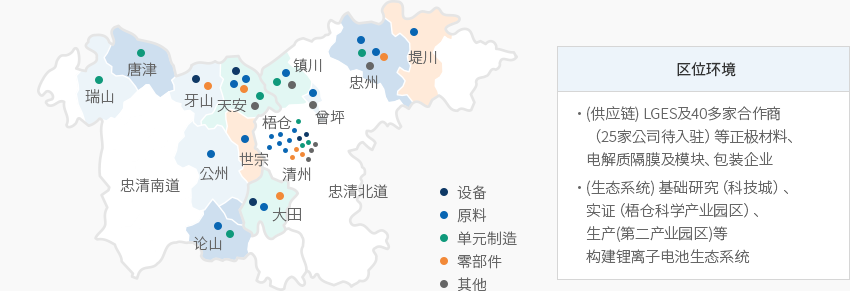
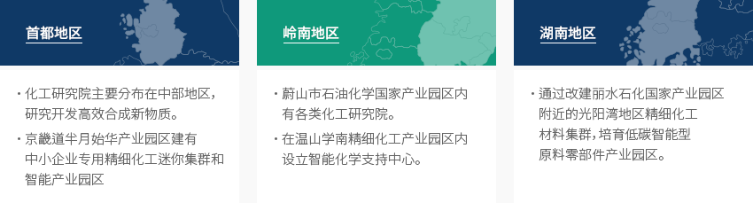
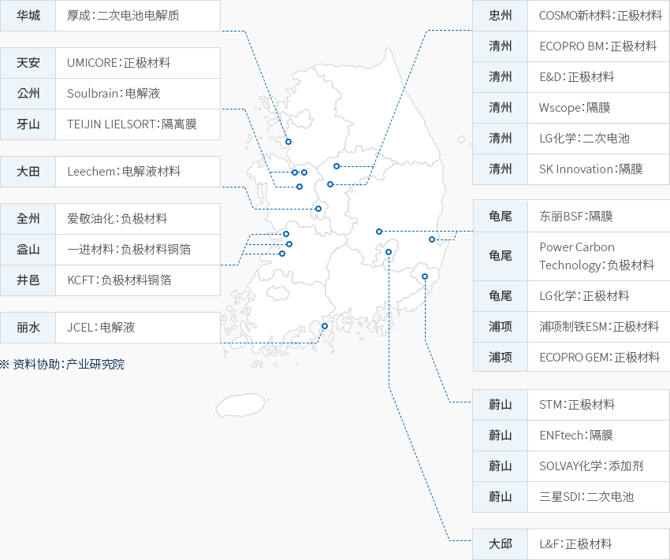
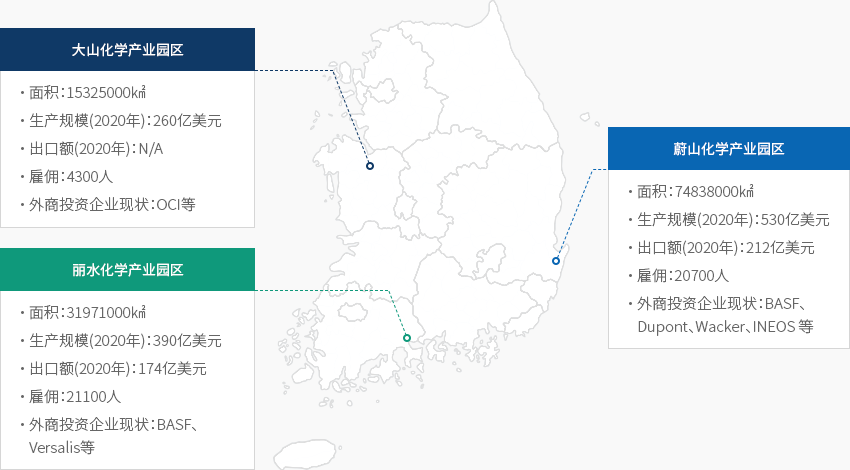

精细化学
- Home
- Why KOREA
- 产业
- 精细化学
-
世界第五的 石化工业市场 关闭内容世界第五的 石化工业市场韩国的化工产业出货额位居世界第五位，规模约达1580亿美元，全球市占率为4.0%。
“乙烯(Ethylene)产能”是衡量一个国家石化工业发展的指标之一，2020年世界乙烯总产量为19,410万吨，
其中韩国的生产量为981.6万吨（占比为5.1%），位居世界第四。
韩国化工企业的实力也十分雄厚，ICIS世界化工企业100强（ICIS，2021年）中就有LG化学、乐天化学、
国际化学、韩华解决方案、GS石油公司等5家韩国化工企业。
上游产业能够提供充足、稳定、高水平的原料，韩国精细化工产业依托资本、知识、技术集约型结构，
为二次电池、汽车、显示器等多种本土下游产业生产关键材料和应用材料。而且，
得益于全球各种下游产业持续增长，精细化工产业也不断发展。2020乙烯产能 世界 194.1(单位: 百万吨/年)- 美国 20.6
- 中国 16.6
- 沙特 9.1
- 韩国 5.1
- 伊朗 3.8
- 印度 3.8
※ 资料来源：韩国石油化学协会
2021年ICIS世界化工企业100强内韩国企业- 第6位: LG化学
- 第23位: 乐天化学
- 第43位: SK国际化学
- 第73位: 韩华解决方案
- 第76位: GS石油公司
※ 资料来源 : ICIS

-
得益于下游产业多元化及出口增加 有望实现持续发展 打开内容得益于下游产业多元化及出口增加 有望实现持续发展韩国是一个制造业强国，汽车、电气电子、纺织、建筑、塑料等主要化工下游产业尤其发达。
以此为基础，韩国的精细化工工业不断发展。韩国精细化工产业的第一大出口对象国是中国大陆，
出口围绕日本、越南、香港等东亚市场实现增长，面向德国和美国等地的出口也在增多。
2020年，得益于生产量及内需持续增加，韩国的化工出口额突破299.5亿美元（MTI 22为准），并超出进口额。特别是显示器、半导体、LCD/LED、二次电池材料领域日益快速增长，LG化学、SK Innoviation、
乐天精细化工、韩华解决方案、锦湖石化等本土企业正随之扩大投资。另外，化工相关专业的教育训练高校共设有348家，其中包括韩国科学技术院（KAIST）、浦项科技大学（POSTECH）等，
每年培养出3万名左右的人才。为加强原料、零部件、设备领域的基建，韩国政府计划将国家研究基础设施从当前的18家增设到
51家。特别是2015年以来，高端人才占比一路攀升。石化领域产业技术人才中的研究员和试验员比重逐年增加，
三年平均增长8.3%，占所有化工产业从业人员的25.3%，而操作员和组装员等生产岗位占比则下降0.6%。"韩国主要下游产业情况"韩国主要下游产业情况 主要产业, 世界地位及主要企业 主要产业 世界地位及主要企业 汽车 - 世界第五大汽车生产国（351万辆，2020年）；
- 环保汽车出口持续增加至27.6万辆，占到总出口额的19.1%。电动汽车、氢燃料电池车对特殊化工材料的需求稳中有涨。
系统半导体 - 三星电子为实现2030年系统半导体世界第一的目标，计划投入约1143亿美元；
- 系统半导体的复杂结构及精细设计使得特殊化学材料需求激增。
显示器 - 韩国显示器在世界市场上的占有率位居第一（2020年）；
- OLED面板出口额连续三年突破百亿美元大关，在显示器出口总额中所占比例超过60%。
二次电池 - 韩国本土IT专用小型二次电池从2011年开始稳居世界第一，大中型电动汽车二次电池也正在紧追中国；
- 拥有技术实力，可向全球电动汽车制造商供应二次电池，在全球电动汽车市场上的占有率名列前茅，其中LG、三星、SK等企业问鼎全球。
※ 资料来源：韩国石油化学协会、韩国贸易协会
※ 注：生产（左）/内需（左）/出口（右）/进口（右） -
跨国企业为应对下游产业的需求 正积极进军韩国 打开内容跨国企业为应对下游产业的需求 正积极进军韩国进军韩国的跨国化工企业大部分是为了应对下游产业（半导体、二次电池、电器电子）的巨大需求，
而生产供应高附加值产品。按外商直接投资申报金额来看，化工产业获得的投资额为77,799亿美元，
在制造业中排名第一。来自亚洲地区的投资尤为活跃，其中中国投资最多，金额高达39,000亿美元。
此外，欧洲地区的投资则主要来自德国。投资来自日本、德国、瑞士、中国等国家，以单独法人或合作企业的方式进入韩国市场。其中，
营商活动比较活跃的领域包括功能性涂层及薄膜、二次电池、工程塑料、半导体等。
东丽高新材料是日本东丽集团的子公司，认识到韩国市场的重要性——拥有三星电子、现代汽车、
SK等电子和汽车领域跨国企业，2017年至2020年陆续对韩投资1万亿韩元。
此外，该公司还宣布将在未来材料开发方面增加投资和就业岗位，例如开发折叠式手机薄膜、
有机发光二极管（OLED）材料、新一代显示器高附加值薄膜材料开发、多层陶瓷电容器（MLCC）等。"进军韩国的主要跨国企业"进军韩国的主要跨国企业 国家, 母公司名称, 所在地, 主要生产品类 国家 母公司名称 所在地 主要生产品类  瑞士
瑞士
欧瑞康巴尔查斯（Oerlikon balzers） 京畿道平泽 PVD，PACVD，底漆、涂层设备  日本
日本
琳得科（Lintec） 京畿道平泽 粘结剂、半导体用薄膜
日本
东丽（Toray） 庆尚北道龟尾、全罗北道群山 二次电池用电池隔膜  中国
中国
GEM 庆尚北道浦项 锂二次电池用正极材料前体  德国
德国
巴斯夫（BASF） 庆尚北道金泉 POM(聚甲醛)
德国
默克（Merck） 京畿道安城市 半导体封装、薄膜涂层、液晶材料 比利时 优美科（Umicore） 忠清南道天安 二次电池用正极材料 比利时 索尔维（Solvay） 全罗北道群山 用于轮胎的高科技环保二氧化硅  美国
美国
空气化工（AirProducts) 京畿道平泽 工业气体制造 -
大力扶持材料、零部件及设备产业发展 助力下游产业发展 打开内容大力扶持原料、零部件及设备产业的发展和 助力下游产业的增长韩国政府正致力于为企业纾困和稳定供应链。通过原料、零部件、
设备政策，提供核心战略技术信息和法律分析服务等，全程帮助企业招商引资。同时，
还在企业收购海外法人时给予收购额10%的税额抵扣，并在3年内最高补贴10亿韩元，
以帮助通过并购掌握技术的企业将技术内化。后续还推出“2021年原料与零部件技术开发项目”，
新增研发课题累计补贴1949.5亿韩元，其中化工产业共有46项课题，获得460.1亿韩元预算补贴，总体金额最高。韩国政府在下游产业发展政策制定了《2030二次电池产业（K-Battery）发展战略（2021年7月）》，
以发展二次电池产业。到2030年民间投资40.6万亿韩元，用于开发原料、零部件、设备等的技术，并推动大型可行性调查。
韩国计划将二次电池关键技术确定为国家战略技术，加强税收扶持，分别为研发和设施投资抵扣最高40～50%、
20%的税额。而且，还为半导体产业提供支持，如对接需求的系统半导体研发（每年300亿韩元）、无晶圆厂专用基金
（1000亿韩元），并延长设备投资抵税期限。另外，还针对AI半导体等下一代半导体技术的开发，
制定了为期10年的1万亿韩元以上投资计划。"2021年原料零部件技术开发项目新研发课题的相关各产业预算"
2021年材料零部件技术开发项目新研发课题相关各产业预算 分类, 课题数, 预算 分类 半导体 显示器 电气电子 汽车 机械金属 基础科学 能源 军工 합계 课题数 26 23 17 13 28 46 22 5 181 预算 (亿韩元) 251.0 317.3 148.8 115.6 340.8 460.1 221.6 74.3 1,949.5 12.9% 16.3% 7.6% 6.0% 17.5% 23.6% 11.4% 3.8% 100.0% ※ 资料来源 : 韩国产业通商资源部
※ 资料来源 : 2021原料零部件技术开发项目 -
按地区建设精细化工产业集群 划定材料、零部件、设备特色园区 打开内容按地区建设精细化工产业集群和 划定原料、零部件、设备特色园区按首都地区、岭南地区、湖南地区划分精细化工产业集群，这些集群主要分布在蔚山、
丽水、温山等产业园区，通过园内石化研究院、化工支持中心、
低碳智能原料/零部件/设备产业园等途径获得地方政府补贴。政府通过划定原料、零部件、设备特色园区（2021年2月23日）让相关核心供需企业和基础设施聚拢，
同时培育产业集群，建设高新产业世界工厂。
现已划定五大原料、零部件、设备特色园区，就像其中龙仁半导体集群、梧仓二次电池产业园区、
天安与牙山显示器产业园区和科技谷等3处对应化工产业的下游产业那样，正规划并实施了多种扶持政策，
如通过分析价值链开展补充领域研发、扶持出口、输送专业研究人才、提供招商引资激励政策等。特别是二次电池原料、零部件、设备特色园区，引进了大量正极材料、电解质、隔膜等石化厂商，
以巩固供应链，并在建设锂电池生态系统等方面助力企业发展。"二次电池原料/零部件/装备的特化园区选址"区位环境- (供应链) LGES及40多家合作商（25家公司待入驻）等正极材料、电解质隔膜及模块、包装企业
- （生态系统）基础研究（科技城）、实证（梧仓科学产业园区）、生产（第二产业园区）等构建锂离子电池生态系统
※ 资料来源：《2030二次电池产业发展战略》"各地区主要内容"-
首都地区
- 化工研究院主要分布在中部地区，研究开发高效合成新物质。
- 京畿道半月始华产业园区建有中小企业专用精细化工迷你集群和智能产业园区。
-
岭南地区
- 蔚山市石油化学国家产业园区内有各类化工研究院
- 在温山学南精细化工产业园区内设立智能化学支持中心。
-
湖南地区
- 通过改建丽水石化国家产业园区附近的光阳湾地区精细化工材料集群，培育低碳智能型原料零部件产业园区 。
"二次电池工厂分布图"-
华城
- 厚成：二次电池电解质
-
忠州
- COSMO新材料：正极材料
-
清州
- ECOPRO BM：正极材料
- E&D：正极材料
- Wscope：隔膜
- LG化学：二次电池
- SK Innovation：隔膜
-
天安
- UMICORE：正极材料
-
公州
- Soulbrain：电解液
-
牙山
- TEIJIN LIELSORT：隔离膜
-
大田
- Leechem：电解液材料
-
全州
- 爱敬油化：负极材料
-
益山
- 一进材料：负极材料铜箔
-
井邑
- KCFT：负极材料铜箔
-
龟尾
- 东丽BSF：隔膜
- Power Carbon Technology：负极材料
- LG化学：正极材料
-
浦项
- 浦项制铁ESM：正极材料
- ECOPRO GEM：正极材料
-
丽水
- JCEL：电解液
-
蔚山
- STM：正极材料
- ENFtech：隔膜
- SOLVAY化学：添加剂
- 三星SDI：二次电池
-
大邱
- L&F：正极材料
※ 资料协助：产业研究院"韩国三大化工产业园区情况"大山化学产业园区- 面积 : 15,325,000㎢
- 生产规模(’20) : 260亿美元
- 出口额(’20) : N/A
- 雇佣 : 4,300人
- 外商投资企业现状 : OCI等
蔚山化学产业园区- 面积 : 74,838,000㎢
- 生产规模(’20) : 530亿美元
- 出口额(’20) : 212亿美元
- 雇佣 : 20,700人
- 外商投资企业现状 : BASF, Dupont, Wacker, INEOS 等
丽水化学产业园区- 面积 : 31,971,000㎢
- 生产规模(’20) : 390亿美元
- 出口额(’20) : 174亿美元
- 雇佣 : 21,100人
- 外商投资企业现状 : 巴斯夫, Versalis 等
※ 资料来源：韩国石油化学协会（KPIA）"主要投资案例"主要投资案例 年度, 编号, 投资企业, 领域, 投资地区(韩国), 主要投资动机 年度 编号 投资企业 领域 投资地区
(韩国)主要投资动机 2019 1 A社 (美国) 普通化工 忠南天安 增设工业用天然气工厂 2 S社 (比利时) 特殊化工 全北群山 增设环保轮胎材料生产工厂 3 U社 (比利时) 二次电池 忠南天安 增设二次电池材料生产工厂 2020 1 H社 (中国) 普通化工 全南光阳 建设铝厂(采用FTA出口模式) 2 T社 (日本) 特殊化工 庆北龟尾 增设碳纤维材料等高科技材料工厂 3 N社 (中国) 二次电池 忠北忠州 新建二次电池正极原料工厂 2021 1 A社 (澳大利亚) 战略资源 忠北梧仓 新建稀土及稀有金属工厂 2 R社 (美国) 特殊化工 全南丽水 通过设立韩国合资企业，新设环保粘合剂工厂 3 H社 (中国) 二次电池 全南光阳 通过设立韩国合资企业，新设电池回收利用工厂


Invest KOREA
化学/材料项目经理
金承顯
基干产业引进组
T.+82-2-3460-7729
选址信息推荐
产业园区信息
[Chungcheongbuk-do Chungju City] Manjeong General Industrial
Complex
Click [Go to Detailed Information] to go to the relevant information screen of
Smart K-Factory service of Industrial Complex Corporation.
-
Complex nameManjeong General Industrial Complex
-
Initial designation date2010.02.05
-
Designated area(m2)50,401
-
ManagementChungcheongbuk-do Chungju City
-
Nearby RailwayDalcheon Station
-
Distance from station(km)5
-
Nearby AirportCheongju International Airport
-
Distance from airport(km)51
-
Industrial water Supply capacity(ton/day)177(㎥/day)
-
Affiliation local governmentChungcheongbuk-do Chungju City
-
Population210,304
产业园区信息
[Ulsan Metropolitan City Nam-gu] Ulsan Techno General Industrial
Complex(Ulsan Free Economic Zone)
Click [Go to Detailed Information] to go to the relevant information screen of
Smart K-Factory service of Industrial Complex Corporation.
-
Complex nameUlsan Techno General Industrial Complex(Ulsan Free Economic Zone)
-
Initial designation date2013.06.20
-
Designated area(m2)1,286,977
-
ManagementUlsan Metropolitan City
-
Nearby RailwayTaehwagang Station
-
Distance from station(km)9
-
Nearby AirportUlsan Airport
-
Distance from airport(km)15
-
Industrial water Supply capacity(ton/day)2614(㎥/day)
-
Affiliation local governmentUlsan Metropolitan City Nam-gu
-
Population1,140,310
产业园区信息
[Jeollabuk-do Gunsan City] Imphi Agricultural Industrial Complex
Click [Go to Detailed Information] to go to the relevant information screen of
Smart K-Factory service of Industrial Complex Corporation.
-
Complex nameImphi Agricultural Industrial Complex
-
Initial designation date2011.06.20
-
Designated area(m2)239,156
-
ManagementJeollabuk-do Gunsan City
-
Nearby RailwayDaeya Station
-
Distance from station(km)7
-
Nearby AirportGunsan Airport
-
Distance from airport(km)31
-
Industrial water Supply capacity(ton/day)426(㎥/day)
-
Affiliation local governmentJeollabuk-do Gunsan City
-
Population267,982
产业园区信息
[Chungcheongnam-do Yesan County] Yesan New Material General Industrial
Complex
Click [Go to Detailed Information] to go to the relevant information screen of
Smart K-Factory service of Industrial Complex Corporation.
-
Complex nameYesan New Material General Industrial Complex
-
Initial designation date2011.06.16
-
Designated area(m2)483,670
-
ManagementChungcheongnam-do Yesan County
-
Nearby RailwaySillyewon Station
-
Distance from station(km)22
-
Nearby AirportCheongju International Airport
-
Distance from airport(km)87
-
Industrial water Supply capacity(ton/day)788(㎥/day)
-
Affiliation local governmentChungcheongnam-do Yesan County
-
Population78,420
产业园区信息
[Busan Metropolitan City Gijang County] Busan New Material General
Industrial Complex
Click [Go to Detailed Information] to go to the relevant information screen of
Smart K-Factory service of Industrial Complex Corporation.
-
Complex nameBusan New Material General Industrial Complex
-
Initial designation date2013.01.16
-
Designated area(m2)255,229
-
ManagementBusan Economic Promotion Agency
-
Nearby RailwayBusan Station
-
Distance from station(km)47
-
Nearby AirportGimhae International Airport
-
Distance from airport(km)48
-
Industrial water Supply capacity(ton/day)0.27(㎥/day)
-
Affiliation local governmentBusan Metropolitan City Gijang County
-
Population172,288
产业园区信息
[Jeollanam-do Mokpo City] Ceramic General Industrial Complex
Click [Go to Detailed Information] to go to the relevant information screen of
Smart K-Factory service of Industrial Complex Corporation.
-
Complex nameCeramic General Industrial Complex
-
Initial designation date2009.06.05
-
Designated area(m2)116,361
-
ManagementJeollanam-do Mokpo City
-
Nearby RailwayMokpo Station
-
Distance from station(km)5
-
Nearby AirportMuan International Airport
-
Distance from airport(km)36
-
Industrial water Supply capacity(ton/day)-
-
Affiliation local governmentJeollanam-do Mokpo City
-
Population226,875